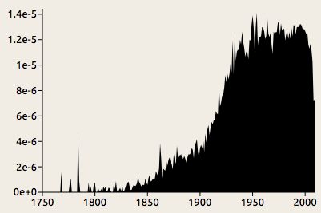
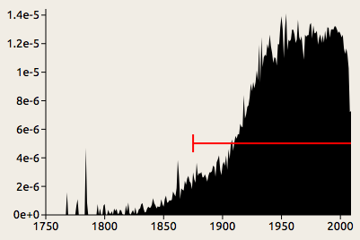

How it works
The initial motive behind the Distance Machine was to raise a question that we do not often ask when reading material from the past: were some of the words in a text less familiar at the time it was published than they seem to us now? It is generally easy for us to spot words that are archaic, either relative to our own time or relative to the time when a text was written, but it is much more difficult to identify anachronisms that go in the other direction—instances where an author is ahead of their time. The availability of large data sets like Google Books allows us to address this question on an unprecedentedly large scale. However, in doing so we face some theoretical difficulties, and I have attempted to take an approach that draws attention to the interpretive problems inherent to this sort of study rather than covering them over. This page gives a brief sketch of the thinking that went into the design of the tool.
The Distance Machine is based on the raw data from Google's Ngrams project, which is
available here. This data set gives us word frequencies for every word that appeared in Google Books as of 2009, broken down by language and year of publication so that we can see the usage change over time. As an example, this chart shows the rise of the word
overlapping in American books in the past few centuries. Although this is a word that we might not think twice about, it is surprisingly recent:

The word overlapping appears occasionally in the eighteenth century, but it does not begin to catch on in earnest until around 1850. Looking further into the history of this word reveals something interesting: it was originally a fencing term, referring to the crossing of two swords. The current, general sense of the word did not appear until the mid-nineteenth century, and we might suspect that instances from around that time carried different connotations.
This example shows how complex the history of a single word can be. Like overlapping, most novel words do not come out of nowhere, but rather gradually build up steam over a period of decades before reaching widespread use; and this rise is frequently accompanied by a shift in meaning. The example of overlapping also shows, on a more basic level, how noisy quantitative data about word usage can be. The Google Books data set includes some books with incorrect dates, and in some cases the data for old books can include words from the introductions and title pages of later reprints. The spikes in the eighteenth century probably result either from such anomalies or from statistical noise resulting from the relatively small number of books published before around 1800.
Because of these complexities, it impossible to determine the exact year when a word becomes common, even within the limited scope of the books included in Google's database. We can, however, make some assumptions that allow us to simplify the problem. The approach that this program takes is based on a
hidden Markov model. The assumptions are quite simple. At any given point in time, a word is either in common use or not. If it is in common use, the frequency is most likely to be around the average for the whole time covered, although there is a chance that it will be greater or less; if it is not in common use, the frequency is most likely to be zero, although there is a chance that it will be greater
1. Each year, there is a small chance that the word will either come into or go out of use.
Given these assumptions, we can compute the periods when the word is most likely to have been in use. To continue with our example of overlapping:

The red line indicates the period when the word is common use according to the model (in this case, 1875 to present). It is positioned at the average height to indicate that level of usage expected according to the model.
This model generally concludes that a word comes into use when it reaches about half the average freqency and remains above that level for some time. Momentary spikes like the one we can see around 1780 are generally discounted as noise, although the model is not infallible—occasionally there might be a spike so high that the model judges, implausibly, that the word went in and out of use within a year.
As that last remark suggests, it is best to take what this program tells you with a grain of salt. Although the model concludes that the use of the word overlapping went through some sort of transition in the year 1875, in reality there was no sudden change; the word had already been in use in its modern sense for decades by that time, and that year just happens to be about midway through its ascent. In addition to treating changes as more sudden than they actually are, the program takes no account of different senses of a word, so it might tell us that a nineteenth-century instance of computer is anachronistic, while in fact that was the usual term at the time for a person who did computations.
To make sense of such results, we must take into account where the frequency data come from. The present version of the Distance Machine is based on
data from Google Books. Google Books mostly excludes periodicals, ephemera, and handwritten texts, and does not represent spoken language at all. The division between US and UK English is based on the place of publication. Since a large number of British books have been reprinted in America and vice versa, these data sets are not perfectly representative of the two dialects. Rather, what they give is a rough idea of what words were commonly used in books printed in the two countries.
Given these limitations, the Distance Machine is better at raising historical questions than it is at providing definite answers. Interpreting the results requires that we think about the contexts in which the changes occurred. Did the word come into more frequent use because the thing it referred to became more prominent, or was it a change in the way people talked about things? Was the word being used in different senses at different times? To provide some food for thought about the different ways in which a word might be used, the tool incorporates definitions
WordNet, but this is only a start. Other sources that are useful in understanding language change are the Oxford English Dictionary and the KWIC concordance tool available through
Brigham Young University's corpus viewer; and understanding the cultural contexts surrounding these changes requires research into cultural history and reading in the archives.
If you'd like to get further into the technical details of this tool, take a look at the
source code on Github.